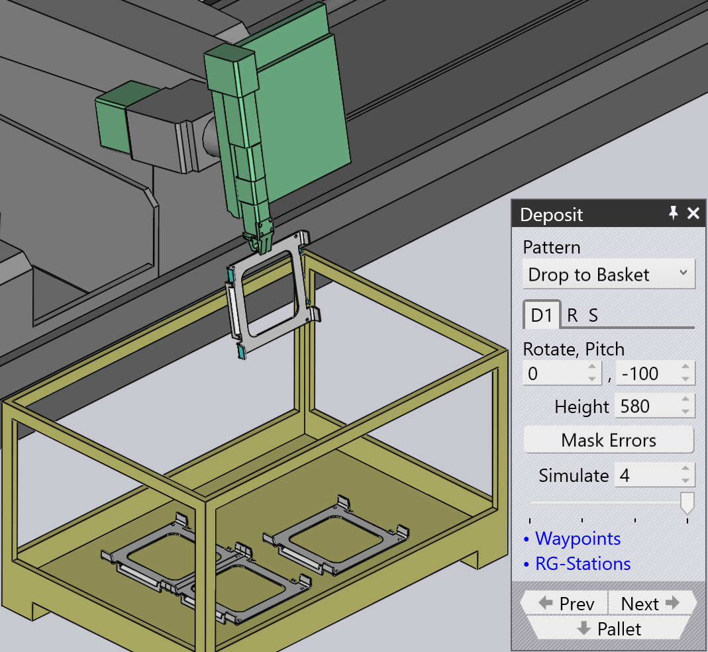

堆放模式类型
Simple Grid
Simple Grid 模式是最常用的模式， 只需将零件堆叠在托盘上的矩形网格中。
当我们使用 Simple Grid 位置时，默认情况下 只有一个堆放位置 D1 可用。

Weave
Weave 模式适用于细长的零件。 D2 层中的零件与 D1 层中的零件呈 90° 放置，如 旁边所示。


-
Weave 设置控制编织的每一层中并排堆叠的零件数量。
-
Gap 是编织内这些零件之间的间隙
-
然后可以使用 Repeat 选项卡上的 Grid 设置在托盘上多次重复整个 编织堆叠。在此示例中，编织堆叠重复了 两次（2 列，1 行）。
-
Repeat 选项卡上的 Gap (Z,X) 设置在 编织重复时使用，并指定编织层之间的间距。
Alternating
Alternating 模式是最灵活的。在此 模式中，您可以控制每个交替层的方向、翻转和相对偏移。
交替模式提供了更稳定且更紧凑的零件堆叠。
当我们使用 Alternating 模式时，默认情况下堆放位置 D1 和 D2 以及 Regrip R1 可用。
| 调整 D1、D2 中的 Delta shift 值并添加 Regrip 以将零件相互锁定。 |

Alternating Batch
Alternating Batch 模式类似于 交替模式，但可以批量堆叠组件并 交替层。
Batch shift 用于在批次内沿 Z 和 X 轴移动零件。
Batch count 用于定义每个堆放 D1 中每批的 组件数量，范围可以从 1 到 50。在下面的示例中， 设置为 5。
Delta shift 用于移动由批次组成的整个堆放 D1 沿 Z 和 X 轴。


使用 Repeat grid (R) 选项卡中的 layers 选项来 定义每个堆放的批次数量。在下面的示例中，设置为 2。

Drop to Basket
此模式用于使用机械夹持器将小零件放入收集篮中。

Conveyor
Conveyor 模式用于将零件堆放在零件 传送带上。当细长的零件堆放在传送带上时，此选项是必需的。
| 当机械夹爪用于中等大小的零件时，所有其他 模式类型将被禁用，无法选择，除了传送带模式。 |

Inclined
Inclined 模式用于垂直堆叠零件 靠着墙壁（或具有侧壁的托盘）。
| 此模式并非总是可用。零件必须足够大才能 实现。对于小零件，机器人无法够到足够低的位置来堆叠 靠着墙壁的零件。 |

Inclined pair
此模式类型与 Alternating 模式非常相似， 只是零件作为一对垂直堆放。
在 D1 或 D2 堆放中引入额外的 Regrip 以形成一对。
Auto-pitch 自动确定堆叠的倾斜角度。
Pitch 设置用于调整 堆叠的倾斜角度，Delta shift 值用于在 X 和 R 轴上移动零件以形成更紧凑的堆叠。


Manual
Manual 模式用于以略微不同的方向 放置每层零件。

-
使用 Add 按钮在最上层的顶部添加新零件。
-
使用 Dn 选项卡旁边的导航 按钮 转到上一层或下一层。
-
Delta shift、Rotate 和 Pitch 设置可用于调整零件，使其 更好地位于下面的零件上。您还可以使用 Delta shift 并单击 Auto-pitch 以要求 TecZone Bend 计算最佳 倾斜角度。
-
使用 Remove 按钮移除最上面的零件。
-
创建手动堆叠后，您可以使用 Repeat 选项卡 (R) 上的设置在托盘上重复相同的堆叠。上图显示 相同的堆叠重复了 2 列，1 行，列之间间隙为 250 mm。
-
Sequence 选项卡 (S) 上的设置可用于控制零件是 by layer 还是 by pile 堆叠。如果使用 逐堆堆叠，第一堆上的所有零件都将完成，然后我们 开始第二堆。